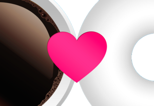
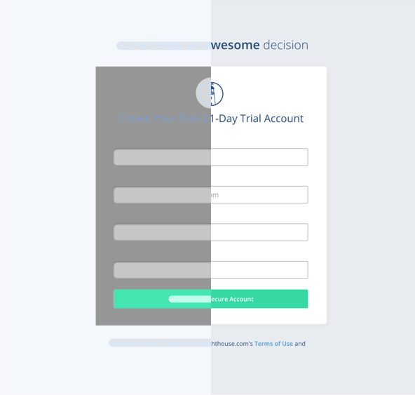
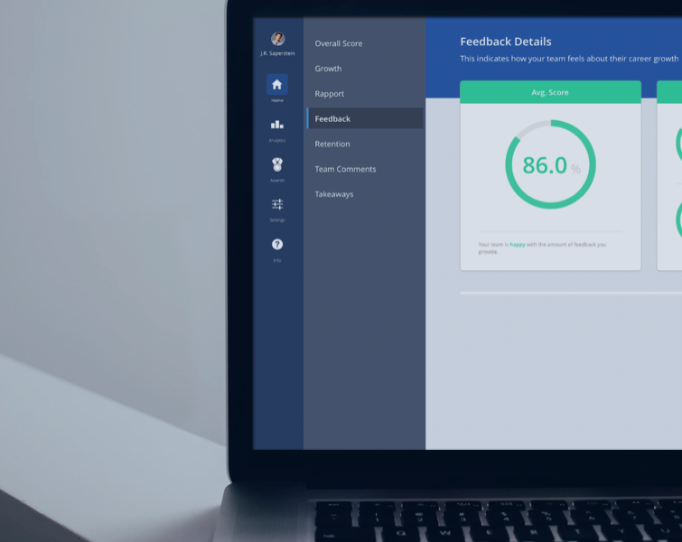

Hello there CMB, I'm Julian and I'd love to design awesome things with you! Have a look at my projects below, and chat soon...


lighthouse ui redesigning an entire SaaS app

directing leaders delighting current users

user signup designing persuasion

manager score full feature life-cycle design